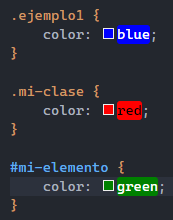
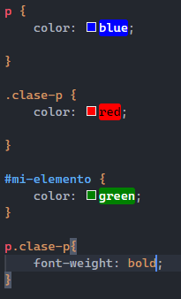
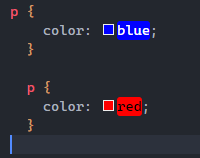
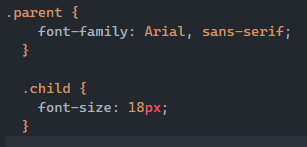

1.Concepto de CSS
Definición: El CSS (Cascading Style Sheets) es un lenguaje de hojas de estilo utilizado para describir el aspecto y formato de un documento HTML u otro tipo de documento estructurado. CSS se utiliza para definir el diseño, el color, la tipografía y otros aspectos visuales de un documento web, permitiendo separar el contenido y la presentación.
2.Explicar una regla CSS detallado
El detalle de una regla CSS a continuacion:

3.Explicar con ejemplos los 4 conceptos de CSS
En este caso, si tenemos un elemento con la etiqueta "p" con la clase "mi-clase" y el identificador "mi-elemento", el color del texto será verde. Aunque la regla p tiene un selector de etiqueta y se aplicaría a todos los párrafos, la regla con el identificador tiene mayor especificidad y anula las otras.
En este caso, el selector p selecciona todos los párrafos, .clase-p selecciona elementos con la clase "clase-p" y #mi-elemento selecciona el elemento con el identificador "mi-elemento". Además, p.clase-p selecciona los párrafos que también tienen la clase "clase-p". Estos selectores te permiten aplicar estilos específicos a diferentes elementos en función de sus características.
En este caso, la segunda regla se aplicará y el color del texto será rojo. La cascada permite que las reglas se apliquen en un orden específico, por lo que la última regla que coincide con un elemento tendrá prioridad.
En este caso, el elemento con la clase "parent" tiene la fuente Arial o una fuente sans-serif aplicada, y los elementos secundarios con la clase "child" heredarán esa propiedad de fuente. No es necesario aplicar explícitamente la propiedad font-family a los elementos secundarios.
